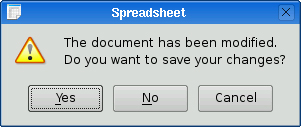

In this section, we will implement the slots and private functions necessary to make the File menu options work and to manage the recently opened files list.
void MainWindow::newFile()
{
if (okToContinue()) {
spreadsheet->clear();
setCurrentFile("");
}
}The newFile() slot is called when the user clicks the File|New menu option or clicks the New toolbar button. The okToContinue() private function pops up the "Do you want to save your changes?" dialog shown in Figure 3.9, if there are unsaved changes. It returns true if the user chooses either Yes or No (saving the document on Yes), and it returns false if the user chooses Cancel. The Spreadsheet::clear() function clears all the spreadsheet's cells and formulas. The setCurrentFile() private function updates the window title to indicate that an untitled document is being edited, in addition to setting the curFile private variable and updating the recently opened files list.

bool MainWindow::okToContinue()
{
if (isWindowModified()) {
int r = QMessageBox::warning(this, tr("Spreadsheet"),
tr("The document has been modified.\n"
"Do you want to save your changes?"),
QMessageBox::Yes | QMessageBox::No
| QMessageBox::Cancel);
if (r == QMessageBox::Yes) {
return save();
} else if (r == QMessageBox::Cancel) {
return false;
}
}
return true;
}In okToContinue(), we check the state of the windowModified property. If it is true, we display the message box shown in Figure 3.9. The message box has a Yes, a No, and a Cancel button.
QMessageBox provides many standard buttons, and automatically tries to make one button the default (activated when the user presses Enter), and one the escape (activated when the user presses Esc). It is also possible to choose particular buttons as the default and escape buttons, and also to customize the button texts.
The call to warning() may look a bit intimidating at first sight, but the general syntax is straightforward:
QMessageBox::warning(parent, title, message, buttons);
In addition to warning(), QMessageBox also provides information(), question(), and critical(), each of which has its own particular icon. The icons are shown in Figure 3.10.
void MainWindow::open()
{
if (okToContinue()) {
QString fileName = QFileDialog::getOpenFileName(this,
tr("Open Spreadsheet"), ".",
tr("Spreadsheet files (*.sp)"));
if (!fileName.isEmpty())
loadFile(fileName);
}
}The open() slot corresponds to File|Open. Like newFile(), it first calls okToContinue() to handle any unsaved changes. Then it uses the static convenience function QFileDialog::getOpenFileName() to obtain a new file name from the user. The function pops up a file dialog, lets the user choose a file, and returns the file name—or an empty string if the user clicked Cancel.
The first argument to QFileDialog::getOpenFileName() is the parent widget. The parent–child relationship doesn't mean the same thing for dialogs as for other widgets. A dialog is always a window in its own right, but if it has a parent, it is centered on top of the parent by default. A child dialog also shares its parent's taskbar entry.
The second argument is the title the dialog should use. The third argument tells it which directory it should start from, in our case the current directory.
The fourth argument specifies the file filters. A file filter consists of a descriptive text and a wildcard pattern. Had we supported comma-separated values files and Lotus 1-2-3 files in addition to Spreadsheet's native file format, we would have used the following filter:
tr("Spreadsheet files (*.sp)\n"
"Comma-separated values files (*.csv)\n"
"Lotus 1-2-3 files (*.wk1 *.wks)")The loadFile() private function was called in open() to load the file. We make it an independent function because we will need the same functionality to load recently opened files:
bool MainWindow::loadFile(const QString &fileName)
{
if (!spreadsheet->readFile(fileName)) {
statusBar()->showMessage(tr("Loading canceled"), 2000);
return false;
}
setCurrentFile(fileName);
statusBar()->showMessage(tr("File loaded"), 2000);
return true;
}We use Spreadsheet::readFile() to read the file from disk. If loading is successful, we call setCurrentFile() to update the window title; otherwise, Spreadsheet::readFile() will have already notified the user of the problem through a message box. In general, it is good practice to let the lower-level components issue error messages, since they can provide the precise details of what went wrong.
In both cases, we display a message in the status bar for two seconds (2000 milliseconds) to keep the user informed about what the application is doing.
bool MainWindow::save()
{
if (curFile.isEmpty()) {
return saveAs();
} else {
return saveFile(curFile);
}
}
bool MainWindow::saveFile(const QString &fileName)
{
if (!spreadsheet->writeFile(fileName)) {
statusBar()->showMessage(tr("Saving canceled"), 2000);
return false;
}
setCurrentFile(fileName);
statusBar()->showMessage(tr("File saved"), 2000);
return true;
}The save() slot corresponds to File|Save. If the file already has a name because it was opened before or has already been saved, save() calls saveFile() with that name; otherwise, it simply calls saveAs().
bool MainWindow::saveAs()
{
QString fileName = QFileDialog::getSaveFileName(this,
tr("Save Spreadsheet"), ".",
tr("Spreadsheet files (*.sp)"));
if (fileName.isEmpty())
return false;
return saveFile(fileName);
}The saveAs() slot corresponds to File|Save As. We call QFileDialog::getSaveFileName() to obtain a file name from the user. If the user clicks Cancel, we return false, which is propagated up to its caller (save() or okToContinue()).
If the file already exists, the getSaveFileName() function will ask the user to confirm that they want to overwrite. This behavior can be changed by passing QFileDialog::DontConfirmOverwrite as an additional argument to getSaveFileName().
void MainWindow::closeEvent(QCloseEvent *event)
{
if (okToContinue()) {
writeSettings();
event->accept();
} else {
event->ignore();
}
}When the user clicks File|Exit or clicks the close button in the window's title bar, the QWidget::close() slot is called. This sends a "close" event to the widget. By reimplementing QWidget::closeEvent(), we can intercept attempts to close the main window and decide whether we want the window to actually close or not.
If there are unsaved changes and the user chooses Cancel, we "ignore" the event and leave the window unaffected by it. In the normal case, we accept the event, resulting in Qt hiding the window. We also call the private function writeSettings() to save the application's current settings.
When the last window is closed, the application terminates. If needed, we can disable this behavior by setting QApplication's quitOnLastWindowClosed property to false, in which case the application keeps running until we call QApplication::quit().
void MainWindow::setCurrentFile(const QString &fileName)
{
curFile = fileName;
setWindowModified(false);
QString shownName = tr("Untitled");
if (!curFile.isEmpty()) {
shownName = strippedName(curFile);
recentFiles.removeAll(curFile);
recentFiles.prepend(curFile);
updateRecentFileActions();
}
setWindowTitle(tr("%1[*] - %2").arg(shownName)
.arg(tr("Spreadsheet")));
}
QString MainWindow::strippedName(const QString &fullFileName)
{
return QFileInfo(fullFileName).fileName();
}In setCurrentFile(), we set the curFile private variable that stores the name of the file being edited. Before we show the file name in the title bar, we remove the file's path with strippedName() to make it more user-friendly.
Every QWidget has a windowModified property that should be set to true if the window's document has unsaved changes, and to false otherwise. On Mac OS X, unsaved documents are indicated by a dot in the close button of the window's title bar; on other platforms, they are indicated by an asterisk following the file name. Qt takes care of this behavior automatically, as long as we keep the windowModified property up-to-date and place the marker "[*]" in the window title where we want the asterisk to appear when it is required.
The text we passed to the setWindowTitle() function was
tr("%1[*] - %2").arg(shownName)
.arg(tr("Spreadsheet"))The QString::arg() function replaces the lowest-numbered "%n" parameter with its argument and returns the resulting %n parameter with its argument and returns the resulting string. In this case, arg() is used with two "%n" parameters. The first call to arg() replaces "%1"; the second call replaces "%2". If the file name is "budget.sp" and no translation file is loaded, the resulting string would be "budget.sp[*] - Spreadsheet". It would have been easier to write
setWindowTitle(shownName + tr("[*] - Spreadsheet"));but using arg() provides more flexibility for human translators.
If there is a file name, we update recentFiles, the application's recently opened files list. We call removeAll() to remove any occurrences of the file name in the list, to avoid duplicates; then we call prepend() to add the file name as the first item. After updating the list, we call the private function updateRecentFileActions() to update the entries in the File menu.
void MainWindow::updateRecentFileActions()
{
QMutableStringListIterator i(recentFiles);
while (i.hasNext()) {
if (!QFile::exists(i.next()))
i.remove();
}
for (int j = 0; j < MaxRecentFiles; ++j) {
if (j < recentFiles.count()) {
QString text = tr("&%1 %2")
.arg(j + 1)
.arg(strippedName(recentFiles[j]));
recentFileActions[j]->setText(text);
recentFileActions[j]->setData(recentFiles[j]);
recentFileActions[j]->setVisible(true);
} else {
recentFileActions[j]->setVisible(false);
}
}
separatorAction->setVisible(!recentFiles.isEmpty());
}We begin by removing any files that no longer exist using a Java-style iterator. Some files might have been used in a previous session, but have since been deleted. The recentFiles variable is of type QStringList (list of QStrings). Chapter 11 explains container classes such as QStringList in detail, showing how they relate to the C++ Standard Template Library (STL), and the use of Qt's Java-style iterator classes.
We then go through the list of files again, this time using array-style indexing. For each file, we create a string consisting of an ampersand, a digit (j + 1), a space, and the file name (without its path). We set the corresponding action to use this text. For example, if the first file was C:\My Documents\tab04.sp, the first action's text would be "&1 tab04.sp". Figure 3.11 shows the correspondence between the recentFileActions array and the resulting menu.

Every action can have an associated "data" item of type QVariant. The QVariant type can hold values of many C++ and Qt types; we cover it in Chapter 11. Here, we store the full name of the file in the action's "data" item so that we can easily retrieve it later. We also set the action to be visible.
If there are more file actions than recent files, we simply hide the extra actions. Finally, if there is at least one recent file, we set the separator to be visible.
void MainWindow::openRecentFile()
{
if (okToContinue()) {
QAction *action = qobject_cast<QAction *>(sender());
if (action)
loadFile(action->data().toString());
}
}When the user chooses a recent file, the openRecentFile() slot is called. The okToContinue() function is used in case there are any unsaved changes, and provided the user did not cancel, we find out which particular action invoked the slot using QObject::sender().
The qobject_cast<T>() function performs a dynamic cast based on the meta-information generated by moc, Qt's meta-object compiler. It returns a pointer of the requested QObject subclass, or 0 if the object cannot be cast to that type. Unlike the Standard C++ dynamic_cast<T>(), Qt's qobject_cast<T>() works correctly across dynamic library boundaries. In our example, we use qobject_cast<T>() to cast a QObject pointer to a QAction pointer. If the cast is successful (it should be), we call loadFile() with the full file name that we extract from the action's data.
Incidentally, since we know that the sender is a QAction, the program would still work if we used static_cast<T>() or a traditional C-style cast instead. Refer to the "Type Conversions" section of Appendix D for an overview of the different C++ casts.